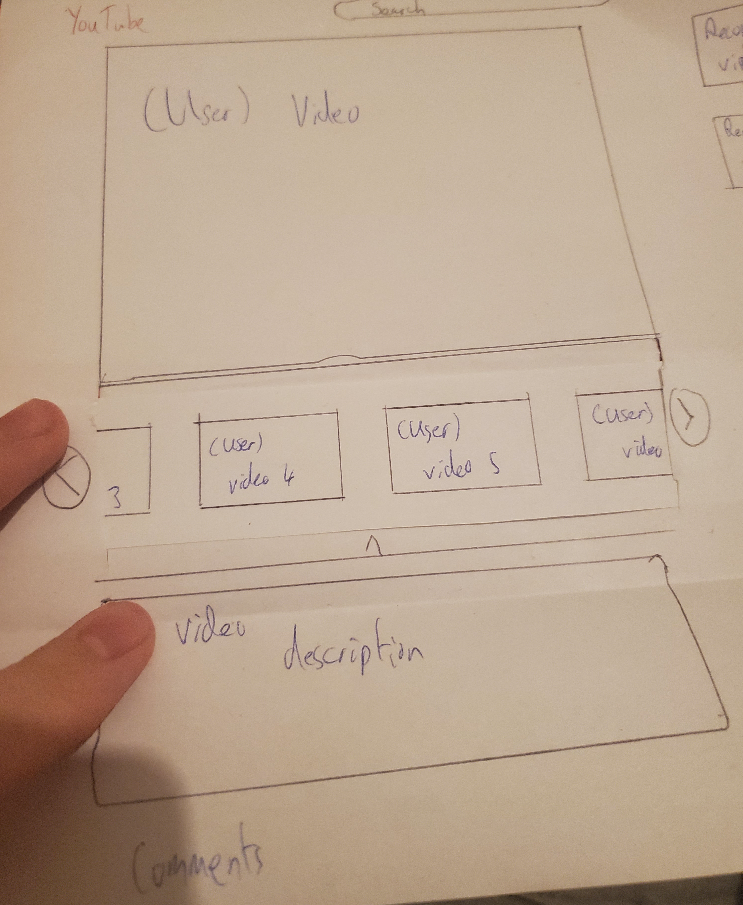

Youtube home page

User hovers over a video

Actions that can be performed show up underneath video
This shows new users the actions that can be performed on a video
when the user hovers their mouse over it. This aims to fix the problem
from the test where the participants didnt know the share function was on
the front page

User click on show recommened video from video author tab
User sees the recommended videos
User can scroll through videos
This new feature allows the user accesss to recommended videos of the creator
they are currently watching. This allows them to enjoy more content from the creator
and see if the creators other content is enjoyable to them.